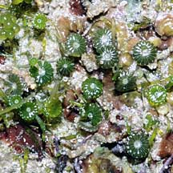
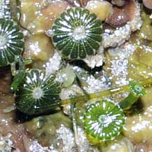
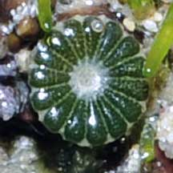
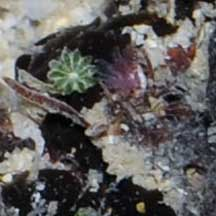
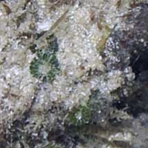

|
|
| green seaweeds text index | photo index |
| Seaweeds > Division Chlorophyta |
| Daisy
green seaweed Parvocaulis parvulus* Family Polyphysaceae updated Oct 2016 Where seen? This tiny seaweed is often overlooked. It grows on stones and coral rubble, often near the 'Taugeh' seaweed (Neomeris sp.) Features: Tiny cap that is shaped like a daisy (about 0.5cm in diameter) made up of 34 petal-shaped 'rays', held up on a thin stalk. This tiny seaweed is calcified, in different degrees depending on the species. The young cap is green and turns white as it ages. |
 Sentosa, Dec 10 |
|
 |
 |
*Species are difficult to positively identify without close examination of internal parts.
On this website, they are grouped by external features for convenience of display.
| Daisy green seaweed on Singapore shores |
| Photos of Daisy green seaweed for free download from wildsingapore flickr |
| Distribution in Singapore on this wildsingapore flickr map |
 Pulau Senang, Aug 10 |
 Terumbu Berkas, Jan 10 |
| Parvocaulis
species recorded for Singapore Pham, M. N., H. T. W. Tan, S. Mitrovic & H. H. T. Yeo, 2011. A Checklist of the Algae of Singapore.
|
Links
|
|
|